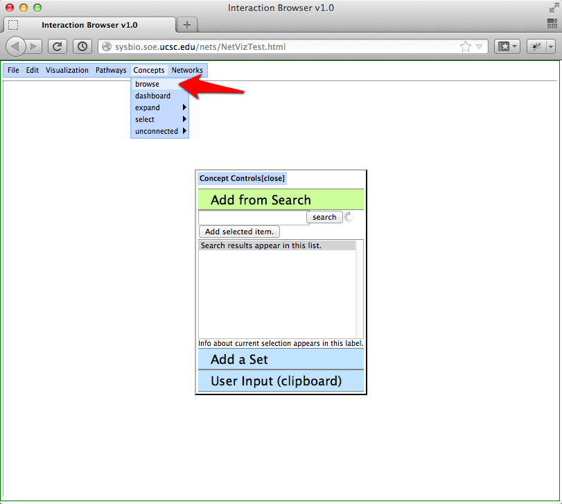
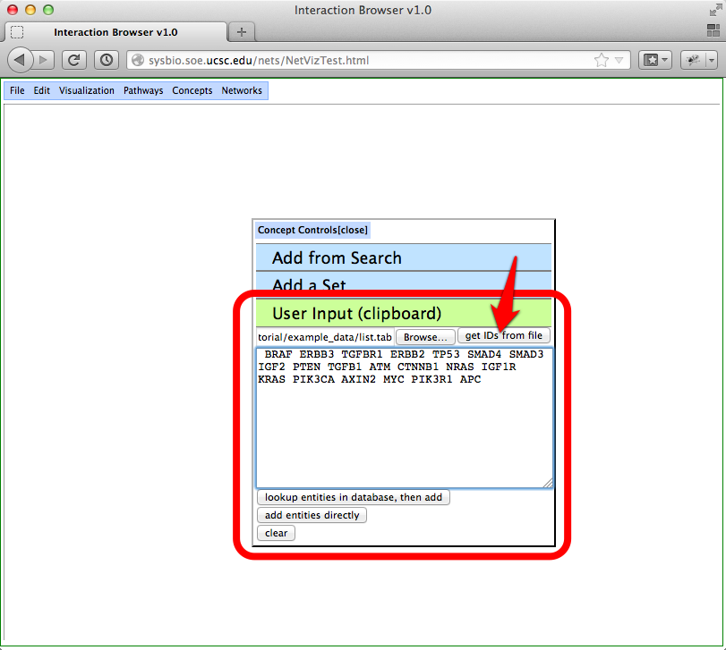

Tutorial for Loading Your Own Data
Here, we use uploaded data files to draw a pathway graph with CircleMap images. For your convenience, the example data files can be downloaded here.
-
Visit the Interaction Browser (IB) webpage by clicking here or the link near the bottom of this page. The IB will open in a new window, so you can refer back to this page easily.
-
Network files are uploaded in the "browse networks" window. To open this window, go to networks -> browse.
-
Next step is to create a selectable network. Click on the "custom" button to reveal controls for loading a network. Give the network a name and then browse your file system for your network file using the "browse" button. Each row in the file gives the two nodes in an edge, separated by a tab character. HUGO gene symbols are the preferred keyspace for genes. An example is available at this link and this link. Click the "submit" button to load the network into the Interaction Browser.
-
The network will become selectable once the network has been successfully uploaded. Click on the "custom networks" button to reveal the controls for uploaded networks. Clicking on the checkbox selects the network for viewing. With the network turned on, edges will be displayed as nodes are added to the graph. In the next step, a gene set will be uploaded.
-
Sets of genes may be added to the graph in the "browse concepts" window. To open this window, go to concepts -> browse. Click on the "user input" panel.

-
To load a gene set from a file, browse your file system using the "browse" button. The file format for gene sets is a tab-delimited file. Again, HUGO gene symbols are the preferred keyspace. An example is available at this link. Once you have found your file, click on the "get IDs from file" button. This will load your gene set into the text area. Double-check the correctness of the IDs and then click "lookup entities in database, then add" button. The Interaction Browser will attempt to map your IDs to a HUGO gene symbol, and then add them to the graph.

-
With the network turned, edges are drawn in the graph as nodes are added. The graph is interactive. Nodes can be repositioned. Double-clicking a node also brings up a window with some information.

-
Many TCGA patient datasets are available for visualization in the Interaction Browser. The data can be displayed as rings in CircleMap node visualizations. It is also possible to uploaded your own data matrices for drawing CircleMaps. To get started with CircleMaps, bring up the CircleMaps window by going to visualization -> concepts -> circle images.
-
Browse your file system for your matrix file using the controls at the bottom of the CircleMaps window. The matrix file has the following requirements:
- The file is tab-delimited.
- Each row contains data for one gene.
- Each column contains data for one sample.
- The first row contains IDs for the samples. Each sample ID should be unique.
- The first column contains IDs for the genes. Please use HUGO gene symbols.
An example is available at this link. Click the "upload matrix" button to upload the file to the Interaction Browser. The Interaction Browser will prepare the data for use in CircleMaps. When it is ready for use, a new checkbox will be created for selecting the newly uploaded data.
-
To view your data in CircleMaps, select your data by clicking its checkbox. Next, click the "view CircleMaps" button. CircleMaps will be drawn and displayed on the graph.
-
Additional datasets may be visualized as concentric rings in the CircleMaps. Simply select the data that you'd like to view. Additional datasets are drawn as additional outer rings of the CircleMap. An additional matrix file is available at this link.
-
The ordering of samples in the CircleMaps can be changed by clicking on a ring in a gene's CircleMap. The new sorting will be based upon the dataset score in the selected gene's ring. Double-clicking on a CircleMap bings up a window with an enlarged view of the CircleMap. Hovering over the large CircleMap will give the name of the rings' datasets. The rings may also be clicked to induce a new sample ordering.